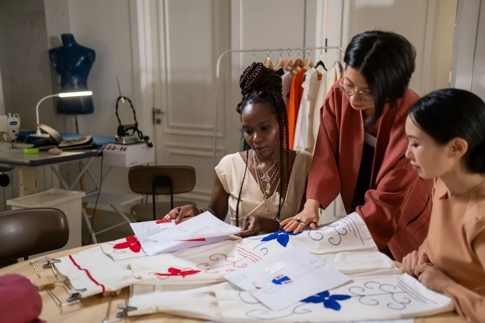

01
Everyday first
Useful shapes that earn their place through repeat wear.
OUR STORY
SÉRAINE is a contemporary boutique built around practical clothing, sensible fabrics and fit with a purpose.

WHY WE ARE HERE
We select pieces for work, weekends, weather and the plans that rarely fit into one category. The aim is a wardrobe that feels current, useful and comfortable enough to wear often.
We pay attention to fabric, movement and care because good design has to work after the photograph.
PERSONAL FIT
Standard sizes are only a starting point. We help with length, sleeves, proportion and straightforward alterations, and we will always be clear about what a garment can support.
Ask about custom fit ↗
01
Useful shapes that earn their place through repeat wear.
02
Breathable, layerable materials with clear care needs.
03
Practical support for comfort, proportion and confidence.